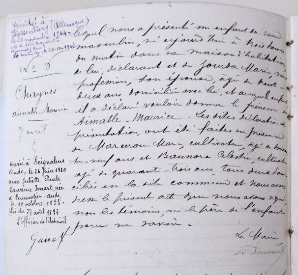

Aimable Chaynes est né le 7 avril 1899 à Saint-Martin-Lys.

Orphelin de mère et de père à 7 ans, il fut pris en charge par l'assistance publique qui le plaça chez un oncle à Espezel. A 13 ans il fut placé dans une ferme à Bellegarde du Razès (Aude).
En 1916, âgé de 17 ans, il s'engage volontaire pour la Première Guerre mondiale, d'où il revient blessé, commotionné.
Il se marie en 1920 avec Juliette Imard, fille de la ferme où il travaille.
En 1931, pensionné de guerre, il obtient un emploi réservé : une recette buraliste. Le couple part pour le département de l'Ain afin d'occuper à Vonnas (Ain), un poste plus important que celui offert dans l'Aude.
Aimable tient la recette buraliste jusqu'à son arrestation le 26 août 1943 (date de son arrestation).
Le couple a eu 4 enfants, le premier reconnu par Aimable après le mariage (Jean), puis Paul, Albertine et René.
Aimable Chaynes, "Maurice", entre dans la Résistance courant 1942 après des contacts avec Paul Pioda, Rasincé et Michel Pesce de Bourg-en-Bresse. Au sein du secteur C8 de l'AS (Armée secrète), il commande le sous-secteur de Vonnas avec Claudius Charvet, "Prosper", et sous les ordres d'Edouard Bourret, "Brun", puis de Jean Decomble, "Benoît", de Châtillon-sur-Chalaronne.
En 1943, il place des réfractaires au STO (Service du travail obligatoire) dans des fermes (Toirette, Matalefon), puis ravitaille le camp de Catane dans les bois d'Illiat et ceux de la haute vallée de l'Ain (pains, viandes, pommes de terre). En outre, Aimable Chaynes participe à la réception et au camouflage de nombreux parachutages dans son secteur, notamment à Perrex.
le dimanche 26 août 1943, donc, à 9 heures du matin deux gendarmes de la brigade de Vonnas se présentent à la recette buraliste suite à une dénonciation. L'un d'eux va au café Desmarès où Aimable est prié de le suivre à la gendarmerie. Pendant le trajet vers la gendarmerie, Aimable fit une boulette de papier qu'il avala : c'était le plan du camp d'Illiat. Les tracts, les tampons et fausses cartes sont brulés par Juliette, son épouse, et René, son fils dans une cuisinière placée dans une pièce contigüe à la Recette buraliste.
Immédiatement après, les responsables du secteur C8 décident d'évacuer les maquisards de Catane vers le camp de Cize dans la montagne.
Aimable Chaynes est interné à Bourg-en-Bresse, puis à la prison Saint-Paul à Lyon, jusqu'à son procès le 22 novembre 1943. Il est condamné par le tribunal spécial à 25 ans de prison et à 10 000 francs d'amende. (Ses camarades Fourrier Raymond 5 ans, Lucien Monnier 6 ans; Jules alban Monnier 3 mois, J. Chambard acquitté).
Il est alors transféré le 8 décembre 1943 à la centrale d'Eysses (Lot et Garonne) avec Fourrier et Monnier. Le 19 février 1944 Aimable tente de s'évader lors d’une mutinerie dans la prison. Le 28 mai 1944 les SS viennent le chercher pour le diriger sur Compiègne (arrivé le 3 juin 1944 - départ le 18 juin 1944) et déporté à Dachau (arrivée le 20 juin 1944) puis Flossenburg (plus exactement à Hersbruck - annexe du camp de Flossembourg), où il meurt le 23 novembre 1944.

Le site de la "Mémoire de la déportation dans l'Ain précise le parcours de déportation d'Aimable Chaynes et situe le lieu de décés à Hersbruck après un passage à Flossenbürg :
Transport: Convoi: 1.229
Ville de départ: Compiègne
Date de départ: 18/06/1944
Ville d'arrivée: Dachau
Date d'arrivée: 20/06/1944
Matricule: 73258
Parcours: 1 - Flossenbürg (Allemagne), 2 - Hersbruck (Allemagne)
Statut: Décédé le 23/11/1944 à Hersbruck (Allemagne)

Dans cette rue était situé le bureau de tabac tenu par les époux Chaynes.
L'Amicale Résistance Chaynes Aimable dont le siège était à Vonnas :
L'objet de l'association était de "Grouper tous les anciens de la résistance, sans distinction d'opinions politiques ou religieuses, dans un but d'entraide de défense de leurs droits et des intérêts de leurs ayant droits"
L'association a été dissoute le 11/12/2012 et n'est plus active depuis le 14/01/2013

Les 1er réfractaires du secteur C8 sont aiguillés dès mars 1943, par les anciens de ”Combat” vers le camp de Chougeat, près de Matafelon. Devant l’afflux à l’été 1943, les responsables du secteur C8, Edouard Bourret, Jean Decomble de Chatillon-sur-Chalaronne, Claudius Charvet de Saint-Julien-sur-Veyle,et Aimable Chaynes de Vonnas créent un camp de Réfractaires.
Dans le bois d’Illiat une quinzaine de réfractaires au S.T.O. s’installent dans des huttes de rondins dans le bois. Ils en confient la responsabilité à Prosper Mignot, ouvrier de la tréfilerie de Bourg en Bresse secondé par Paul Pauget, auxilliaire PTT à Saint-Denis-les-Bourg. [...]
Pour toute arme les réfractaires ne disposent que d’un vieux révolver et d’un fusil de chasse. La consigne est de ne pas bouger. Ce camp est crée le 10 juillet 1943, jour anniversaire du débarquement allié en Sicile à Catane. Ce camp est baptisé Camp de Catane en cet honneur. Le 1er août 1943, se déroule une prise d’arme en présence de Romans.
Devant les incursions répétées des GMR, et les arrestations de Monnier de Perrex et de Chaynes de Vonnas (31 aôut), décision est prise d’évacuer le Camp de Catane. Le 31 aout, Les hommes sont pris en charge momentanément par les familles,[...]